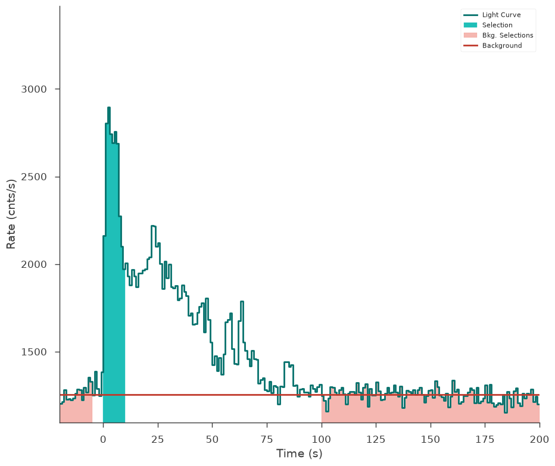

[1]:
import warnings
warnings.simplefilter("ignore")
[2]:
%%capture
import matplotlib.pyplot as plt
import numpy as np
np.seterr(all="ignore")
from threeML import *
from threeML.io.package_data import get_path_of_data_file
[3]:
from jupyterthemes import jtplot
%matplotlib inline
jtplot.style(context="talk", fscale=1, ticks=True, grid=False)
silence_warnings()
set_threeML_style()
Constructing plugins from TimeSeries
Many times we encounter event lists or sets of spectral histograms from which we would like to derive a single or set of plugins. For this purpose, we provide the TimeSeriesBuilder which provides a unified interface to time series data. Here we will demonstrate how to construct plugins from different data types.
These utilities are helpers that allow you to reduce data to pluigns for spectral and temporal fitting. They are not plugins themselves.
Constructing time series objects from different data types
The TimeSeriesBuilder currently supports reading of the following data type:
A generic PHAII data file
GBM TTE/CSPEC/CTIME files
LAT LLE files
POLAR spectra and polarization light curves
KONUS GRB data
Note: If you would like to build a time series from your own custom data, consider creating a TimeSeriesBuilder.from_your_data() class method.
GBM Data
Building plugins from GBM is achieved in the following fashion
[4]:
cspec_file = get_path_of_data_file("datasets/glg_cspec_n3_bn080916009_v01.pha")
tte_file = get_path_of_data_file("datasets/glg_tte_n3_bn080916009_v01.fit.gz")
gbm_rsp = get_path_of_data_file("datasets/glg_cspec_n3_bn080916009_v00.rsp2")
gbm_cspec = TimeSeriesBuilder.from_gbm_cspec_or_ctime(
"nai3_cspec", cspec_or_ctime_file=cspec_file, rsp_file=gbm_rsp
)
gbm_tte = TimeSeriesBuilder.from_gbm_tte(
"nai3_tte", tte_file=tte_file, rsp_file=gbm_rsp
)
The default choice for MATRIX extension failed:KeyError("Extension ('MATRIX', 1) not found.")available: None 'EBOUNDS' 'SPECRESP MATRIX' 'SPECRESP MATRIX' 'SPECRESP MATRIX'
No TLMIN keyword found. This DRM does not follow OGIP standards. Assuming TLMIN=1
Minimum MC energy (5.0) is larger than minimum EBOUNDS energy (4.267000198364258)
The default choice for MATRIX extension failed:KeyError("Extension ('MATRIX', 1) not found.")available: None 'EBOUNDS' 'SPECRESP MATRIX' 'SPECRESP MATRIX' 'SPECRESP MATRIX'
No TLMIN keyword found. This DRM does not follow OGIP standards. Assuming TLMIN=1
Minimum MC energy (5.0) is larger than minimum EBOUNDS energy (4.267000198364258)
The default choice for MATRIX extension failed:KeyError("Extension ('MATRIX', 2) not found.")available: None 'EBOUNDS' 'SPECRESP MATRIX' 'SPECRESP MATRIX' 'SPECRESP MATRIX'
No TLMIN keyword found. This DRM does not follow OGIP standards. Assuming TLMIN=1
Minimum MC energy (5.0) is larger than minimum EBOUNDS energy (4.267000198364258)
The default choice for MATRIX extension failed:KeyError("Extension ('MATRIX', 3) not found.")available: None 'EBOUNDS' 'SPECRESP MATRIX' 'SPECRESP MATRIX' 'SPECRESP MATRIX'
No TLMIN keyword found. This DRM does not follow OGIP standards. Assuming TLMIN=1
Minimum MC energy (5.0) is larger than minimum EBOUNDS energy (4.267000198364258)
Minimum MC energy (5.0) is larger than minimum EBOUNDS energy (4.267000198364258)
The TTE file /home/runner/work/threeML/threeML/threeML/data/datasets/glg_tte_n3_bn080916009_v01.fit.gz contains duplicate time tags and is thus invalid. Contact the FSSC
The TTE file /home/runner/work/threeML/threeML/threeML/data/datasets/glg_tte_n3_bn080916009_v01.fit.gz was not sorted in time but contains no duplicate events. We will sort the times, but use caution with this file. Contact the FSSC.
The default choice for MATRIX extension failed:KeyError("Extension ('MATRIX', 1) not found.")available: None 'EBOUNDS' 'SPECRESP MATRIX' 'SPECRESP MATRIX' 'SPECRESP MATRIX'
No TLMIN keyword found. This DRM does not follow OGIP standards. Assuming TLMIN=1
Minimum MC energy (5.0) is larger than minimum EBOUNDS energy (4.267000198364258)
The default choice for MATRIX extension failed:KeyError("Extension ('MATRIX', 2) not found.")available: None 'EBOUNDS' 'SPECRESP MATRIX' 'SPECRESP MATRIX' 'SPECRESP MATRIX'
No TLMIN keyword found. This DRM does not follow OGIP standards. Assuming TLMIN=1
Minimum MC energy (5.0) is larger than minimum EBOUNDS energy (4.267000198364258)
The default choice for MATRIX extension failed:KeyError("Extension ('MATRIX', 3) not found.")available: None 'EBOUNDS' 'SPECRESP MATRIX' 'SPECRESP MATRIX' 'SPECRESP MATRIX'
No TLMIN keyword found. This DRM does not follow OGIP standards. Assuming TLMIN=1
Minimum MC energy (5.0) is larger than minimum EBOUNDS energy (4.267000198364258)
Minimum MC energy (5.0) is larger than minimum EBOUNDS energy (4.267000198364258)
LAT LLE data
LAT LLE data is constructed in a similar fashion
[5]:
lle_file = get_path_of_data_file("datasets/gll_lle_bn080916009_v10.fit")
ft2_file = get_path_of_data_file("datasets/gll_pt_bn080916009_v10.fit")
lle_rsp = get_path_of_data_file("datasets/gll_cspec_bn080916009_v10.rsp")
lat_lle = TimeSeriesBuilder.from_lat_lle(
"lat_lle", lle_file=lle_file, ft2_file=ft2_file, rsp_file=lle_rsp
)
The default choice for MATRIX extension failed:KeyError("Extension ('MATRIX', 1) not found.")available: None 'EBOUNDS' 'SPECRESP MATRIX'
Viewing Lightcurves and selecting source intervals
All time series objects share the same commands to get you to a plugin. Let’s have a look at the GBM TTE lightcurve.
[6]:
fig = gbm_tte.view_lightcurve(start=-20, stop=200)

Perhaps we want to fit the time interval from 0-10 seconds. We make a selection like this:
[7]:
gbm_tte.set_active_time_interval("0-10")
fig = gbm_tte.view_lightcurve(start=-20, stop=200)
Minimum MC energy (5.0) is larger than minimum EBOUNDS energy (4.267000198364258)

For event list style data like time tagged events, the selection is exact. However, pre-binned data in the form of e.g. PHAII files will have the selection automatically adjusted to the underlying temporal bins.
Several discontinuous time selections can be made.
Fitting a polynomial background
In order to get to a plugin, we need to model and create an estimated background in each channel (\(B_i\)) for our interval of interest. The process that we have implemented is to fit temporal off-source regions to polynomials (\(P(t;\vec{\theta})\)) in time. First, a polynomial is fit to the total count rate. From this fit we determine the best polynomial order via a likelihood ratio test, unless the user supplies a polynomial order in the constructor or directly via the polynomial_order attribute. Then, this order of polynomial is fit to every channel in the data.
From the polynomial fit, the polynomial is integrated in time over the active source interval to estimate the count rate in each channel. The estimated background and background errors then stored for each channel.
[8]:
gbm_tte.set_background_interval("-24--5", "100-200")
fig = gbm_tte.view_lightcurve(start=-20, stop=200)

What occurs during a fit?
In the background, the data type of the time series is analyzed (is it Poisson of Gaussian distributed?) and the time series are converted to plugins of counts / measurements vs. time. These plugins are then fit with either MLE or Bayesian methods just any other 3ML analysis. While this happens behinds the scene, it is possible to interface to these low-level operations are create your own custom background routines!
For event list data, binned or unbinned background fits are possible. For pre-binned data, only a binned fit is possible.
[9]:
gbm_tte.set_background_interval("-24--5", "100-200", unbinned=False)
Saving the background fit
The background polynomial coefficients can be saved to disk for faster manipulation of time series data.
[10]:
gbm_tte.save_background("background_store", overwrite=True)
[11]:
gbm_tte_reloaded = TimeSeriesBuilder.from_gbm_tte(
"nai3_tte",
tte_file=tte_file,
rsp_file=gbm_rsp,
restore_background="background_store.h5",
)
The TTE file /home/runner/work/threeML/threeML/threeML/data/datasets/glg_tte_n3_bn080916009_v01.fit.gz contains duplicate time tags and is thus invalid. Contact the FSSC
The TTE file /home/runner/work/threeML/threeML/threeML/data/datasets/glg_tte_n3_bn080916009_v01.fit.gz was not sorted in time but contains no duplicate events. We will sort the times, but use caution with this file. Contact the FSSC.
The default choice for MATRIX extension failed:KeyError("Extension ('MATRIX', 1) not found.")available: None 'EBOUNDS' 'SPECRESP MATRIX' 'SPECRESP MATRIX' 'SPECRESP MATRIX'
No TLMIN keyword found. This DRM does not follow OGIP standards. Assuming TLMIN=1
Minimum MC energy (5.0) is larger than minimum EBOUNDS energy (4.267000198364258)
The default choice for MATRIX extension failed:KeyError("Extension ('MATRIX', 2) not found.")available: None 'EBOUNDS' 'SPECRESP MATRIX' 'SPECRESP MATRIX' 'SPECRESP MATRIX'
No TLMIN keyword found. This DRM does not follow OGIP standards. Assuming TLMIN=1
Minimum MC energy (5.0) is larger than minimum EBOUNDS energy (4.267000198364258)
The default choice for MATRIX extension failed:KeyError("Extension ('MATRIX', 3) not found.")available: None 'EBOUNDS' 'SPECRESP MATRIX' 'SPECRESP MATRIX' 'SPECRESP MATRIX'
No TLMIN keyword found. This DRM does not follow OGIP standards. Assuming TLMIN=1
Minimum MC energy (5.0) is larger than minimum EBOUNDS energy (4.267000198364258)
Minimum MC energy (5.0) is larger than minimum EBOUNDS energy (4.267000198364258)
[12]:
fig = gbm_tte_reloaded.view_lightcurve(-10, 200)

Creating a plugin
With our background selections made, we can now create a plugin instance. In the case of GBM data, this results in a DispersionSpectrumLike plugin. Please refer to the Plugins documentation for more details.
[13]:
gbm_plugin = gbm_tte.to_spectrumlike()
[14]:
gbm_plugin.display()
| 0 | |
|---|---|
| n. channels | 128 |
| total rate | 2508.771647 |
| total bkg. rate | 1253.550869 |
| total bkg. rate error | 3.250957 |
| bkg. exposure | 9.94112 |
| bkg. is poisson | False |
| exposure | 9.94112 |
| is poisson | True |
| background | profiled |
| significance | 93.530927 |
| src/bkg area ratio | 1.0 |
| src/bkg exposure ratio | 1.0 |
| src/bkg scale factor | 1.0 |
| response | None |
Time-resolved binning and plugin creation
It is possible to temporally bin time series. There are up to four methods provided depending on the type of time series being used:
Constant cadence (all time series)
Custom (all time series)
Significance (all time series)
Bayesian Blocks (event lists)
Constant Cadence
Constant cadence bins are defined by a start and a stop time along with a time delta.
[15]:
gbm_tte.create_time_bins(start=0, stop=10, method="constant", dt=2.0)
[16]:
gbm_tte.bins.display()
| Start | Stop | Duration | Midpoint | |
|---|---|---|---|---|
| 0 | 0.000412 | 2.000412 | 2.0 | 1.000412 |
| 1 | 2.000412 | 4.000412 | 2.0 | 3.000412 |
| 2 | 4.000412 | 6.000412 | 2.0 | 5.000412 |
| 3 | 6.000412 | 8.000412 | 2.0 | 7.000412 |
| 4 | 8.000412 | 10.000412 | 2.0 | 9.000412 |
Custom
Custom time bins can be created by providing a contiguous list of start and stop times.
[17]:
time_edges = np.array([0.5, 0.63, 20.0, 21.0])
starts = time_edges[:-1]
stops = time_edges[1:]
gbm_tte.create_time_bins(start=starts, stop=stops, method="custom")
[18]:
gbm_tte.bins.display()
| Start | Stop | Duration | Midpoint | |
|---|---|---|---|---|
| 0 | 0.50 | 0.63 | 0.13 | 0.565 |
| 1 | 0.63 | 20.00 | 19.37 | 10.315 |
| 2 | 20.00 | 21.00 | 1.00 | 20.500 |
Significance
Time bins can be created by specifying a significance of signal to background if a background fit has been performed.
[19]:
gbm_tte.create_time_bins(start=0.0, stop=50.0, method="significance", sigma=25)
[20]:
gbm_tte.bins.display()
| Start | Stop | Duration | Midpoint | |
|---|---|---|---|---|
| 0 | 0.000412 | 1.102108 | 1.101696 | 0.551260 |
| 1 | 1.102108 | 1.526892 | 0.424784 | 1.314500 |
| 2 | 1.526892 | 1.975848 | 0.448956 | 1.751370 |
| 3 | 1.975848 | 2.433242 | 0.457394 | 2.204545 |
| 4 | 2.433242 | 2.775556 | 0.342314 | 2.604399 |
| 5 | 2.775556 | 3.224600 | 0.449044 | 3.000078 |
| 6 | 3.224600 | 3.788502 | 0.563902 | 3.506551 |
| 7 | 3.788502 | 4.206910 | 0.418408 | 3.997706 |
| 8 | 4.206910 | 4.709384 | 0.502474 | 4.458147 |
| 9 | 4.709384 | 5.282898 | 0.573514 | 4.996141 |
| 10 | 5.282898 | 5.787524 | 0.504626 | 5.535211 |
| 11 | 5.787524 | 6.166124 | 0.378600 | 5.976824 |
| 12 | 6.166124 | 6.715524 | 0.549400 | 6.440824 |
| 13 | 6.715524 | 7.419990 | 0.704466 | 7.067757 |
| 14 | 7.419990 | 8.639396 | 1.219406 | 8.029693 |
| 15 | 8.639396 | 10.278336 | 1.638940 | 9.458866 |
| 16 | 10.278336 | 12.273390 | 1.995054 | 11.275863 |
| 17 | 12.273390 | 14.396536 | 2.123146 | 13.334963 |
| 18 | 14.396536 | 16.656876 | 2.260340 | 15.526706 |
| 19 | 16.656876 | 18.544916 | 1.888040 | 17.600896 |
| 20 | 18.544916 | 20.373686 | 1.828770 | 19.459301 |
| 21 | 20.373686 | 21.979698 | 1.606012 | 21.176692 |
| 22 | 21.979698 | 23.023478 | 1.043780 | 22.501588 |
| 23 | 23.023478 | 24.101980 | 1.078502 | 23.562729 |
| 24 | 24.101980 | 25.360608 | 1.258628 | 24.731294 |
| 25 | 25.360608 | 27.060798 | 1.700190 | 26.210703 |
| 26 | 27.060798 | 29.069756 | 2.008958 | 28.065277 |
| 27 | 29.069756 | 31.011772 | 1.942016 | 30.040764 |
| 28 | 31.011772 | 33.481182 | 2.469410 | 32.246477 |
| 29 | 33.481182 | 36.371024 | 2.889842 | 34.926103 |
| 30 | 36.371024 | 39.143378 | 2.772354 | 37.757201 |
| 31 | 39.143378 | 44.045158 | 4.901780 | 41.594268 |
| 32 | 44.045158 | 48.030536 | 3.985378 | 46.037847 |
Bayesian Blocks
The Bayesian Blocks algorithm (Scargle et al. 2013) can be used to bin event list by looking for significant changes in the rate.
[21]:
gbm_tte.create_time_bins(
start=0.0, stop=50.0, method="bayesblocks", p0=0.01, use_background=True
)
[22]:
gbm_tte.bins.display()
| Start | Stop | Duration | Midpoint | |
|---|---|---|---|---|
| 0 | 0.000412 | 0.816854 | 0.816442 | 0.408633 |
| 1 | 0.816854 | 6.983690 | 6.166836 | 3.900272 |
| 2 | 6.983690 | 8.823971 | 1.840281 | 7.903831 |
| 3 | 8.823971 | 21.723166 | 12.899195 | 15.273569 |
| 4 | 21.723166 | 25.502056 | 3.778890 | 23.612611 |
| 5 | 25.502056 | 30.894882 | 5.392826 | 28.198469 |
| 6 | 30.894882 | 38.893854 | 7.998972 | 34.894368 |
| 7 | 38.893854 | 48.517036 | 9.623182 | 43.705445 |
| 8 | 48.517036 | 49.999594 | 1.482558 | 49.258315 |
Working with bins
The light curve can be displayed by supplying the use_binner option to display the time binning
[23]:
fig = gbm_tte.view_lightcurve(use_binner=True)

The bins can all be writted to a PHAII file for analysis via OGIPLike.
[24]:
gbm_tte.write_pha_from_binner(
file_name="out", overwrite=True, force_rsp_write=False
) # if you need to write the RSP to a file. We try to choose the best option for you.
Minimum MC energy (5.0) is larger than minimum EBOUNDS energy (4.267000198364258)
Minimum MC energy (5.0) is larger than minimum EBOUNDS energy (4.267000198364258)
Minimum MC energy (5.0) is larger than minimum EBOUNDS energy (4.267000198364258)
Minimum MC energy (5.0) is larger than minimum EBOUNDS energy (4.267000198364258)
Minimum MC energy (5.0) is larger than minimum EBOUNDS energy (4.267000198364258)
Minimum MC energy (5.0) is larger than minimum EBOUNDS energy (4.267000198364258)
Minimum MC energy (5.0) is larger than minimum EBOUNDS energy (4.267000198364258)
Minimum MC energy (5.0) is larger than minimum EBOUNDS energy (4.267000198364258)
Minimum MC energy (5.0) is larger than minimum EBOUNDS energy (4.267000198364258)
Minimum MC energy (5.0) is larger than minimum EBOUNDS energy (4.267000198364258)
Similarly, we can create a list of plugins directly from the time series.
[25]:
my_plugins = gbm_tte.to_spectrumlike(from_bins=True)
Minimum MC energy (5.0) is larger than minimum EBOUNDS energy (4.267000198364258)
Minimum MC energy (5.0) is larger than minimum EBOUNDS energy (4.267000198364258)
Minimum MC energy (5.0) is larger than minimum EBOUNDS energy (4.267000198364258)
Minimum MC energy (5.0) is larger than minimum EBOUNDS energy (4.267000198364258)
Minimum MC energy (5.0) is larger than minimum EBOUNDS energy (4.267000198364258)
Minimum MC energy (5.0) is larger than minimum EBOUNDS energy (4.267000198364258)
Minimum MC energy (5.0) is larger than minimum EBOUNDS energy (4.267000198364258)
Minimum MC energy (5.0) is larger than minimum EBOUNDS energy (4.267000198364258)
Minimum MC energy (5.0) is larger than minimum EBOUNDS energy (4.267000198364258)
Minimum MC energy (5.0) is larger than minimum EBOUNDS energy (4.267000198364258)